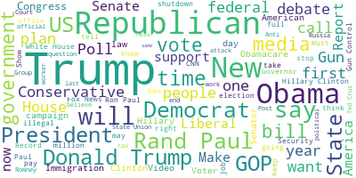
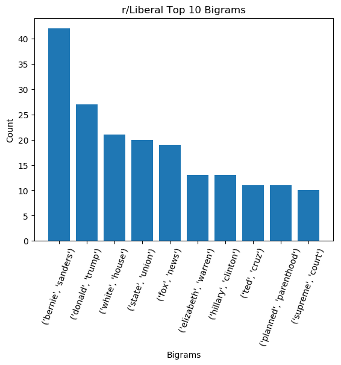
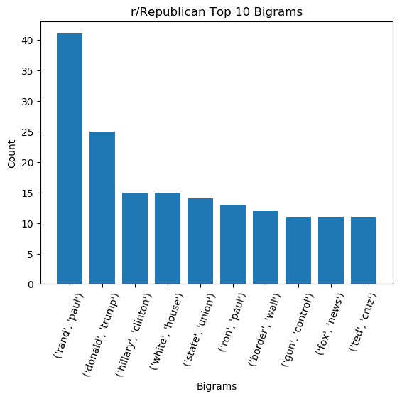

How Biased are Political Subreddits?
A preliminary analysis using Natural Language Processing
Introduction
Political subreddits mostly serve the purpose as an aggregate of news articles. Someone posts an article,
some users upvote and downvote the article, and others participate in the discussion of the article by commenting on
it. As it stands, accurately gaguing the political bias of even a news article is an extremely complex and
challenging problem that PhDs are working on. Since political subreddits are essentially article aggregate sites,
accurately gauging the political bias of a subreddit is even more difficult. To work around this almost intractable
problem, I developed my own metric for a subreddit's bias based on the title of each post (which almost always is the
title of an article) and the post's score. The list of subreddits considered in this analysis were: politics,
uspolitics, AmericanPolitics, progressive, democrats, Liberal, Republican, Conservative, and Libertarian.

Interestingly, according to my metric, r/politics is the most conservative by far, with a score of almost 7x that of
r/Libertarian and r/Conservative. As we continue to (openly) move left in the political spectrum the subreddits become
less and less conservative. Since my metric uses the title of the articles, most articles. I suspect that a few outliers
are pushing the bias score of r/politics to be heavily right leaning according to my metric. In order to get a better
idea of what's going on, we need to see what the most common words being posted are.

Visualizing the most common words posted on r/politics, we unsurprisingly see Trump at the forefront of the
popularity contest. Looking deeper, we see words and phrases like "Republican," "North Korea," "climate change,"
"russia investigation," "health care," and "Fox News" are also popular topics.

The most common bigrams confirm the overwhelming popularity of Trump and the White House, with those topics taking
6 out of the top 8 spots (removing the unimportant bigrams).
In contrast, let's take a look at what r/Conservatives like to post about.

We see that instead of being coompletely dominated by versions of "Donald Trump" and "white house", r/Conservatives posts
are more diverse. There's a strong presence of "Obama," "conservative," "democrat," "liberal," "left," and interestingly, "attack",
"muslim," "media," "Black," "antifa," and "police".
On the other end of the spectrum, we now take a look at r/Democrats.

Interestingly, we don't see as many issue-oriented words as we do in r/Conservatives, or even r/politics.
Appendix: The rest of the wordclouds
AmericanPolitics

Liberal

Progressive

Republican

uspolitics

Appendix: The rest of the top 10 bigrams
AmericanPolitics

Liberal

Progressive

Republican

uspolitics

Conservative

democrats
 Appendix: Methodology
Appendix: Methodology
As mentioned in the introduciton, I had to create my own metric to gague the political bias of the subreddit. Here's how:
For each post with a score of 10 or over, take the log of the score, then normalize the score by the number of subscribers. Count the number of words in the title that are in my
set of "conservative words" and the number of words that are in my set of "liberal words". If there are more conservative words than liberal words,
the article is probably about a conservative topic, so multiply it by -1 (I wanted conservative to be negative, and liberal positive).
If not, leave the score as is. If the title is subjective, multiply the score by 50 (giving the post a weight of at least 5x since the min subjectivity
score is 0.1). Finally, multiply by the polarity.
Doing this let my metric define negative sentiment towards a conservative topic as "left leaning" (overall score > 0), and positive sentiment towards a
liberal topic also be "left leaning," and so on.
Since my metric seemingly did a poor job at gauging the political lean of
each subreddit, it'll be worthwhile to revamp it for the final project.
Because of issues with computation time, I had to scale down my data to be the posts in the month of January from the years 2011-2019.